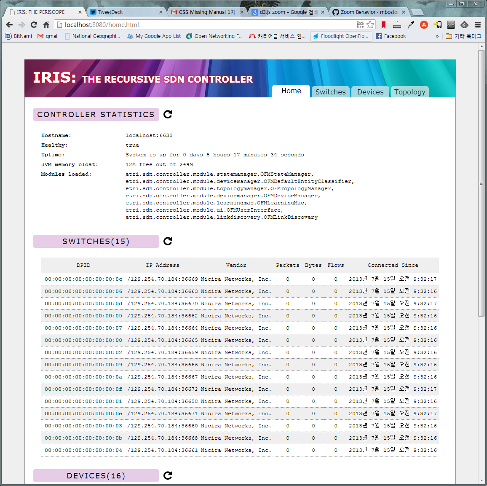
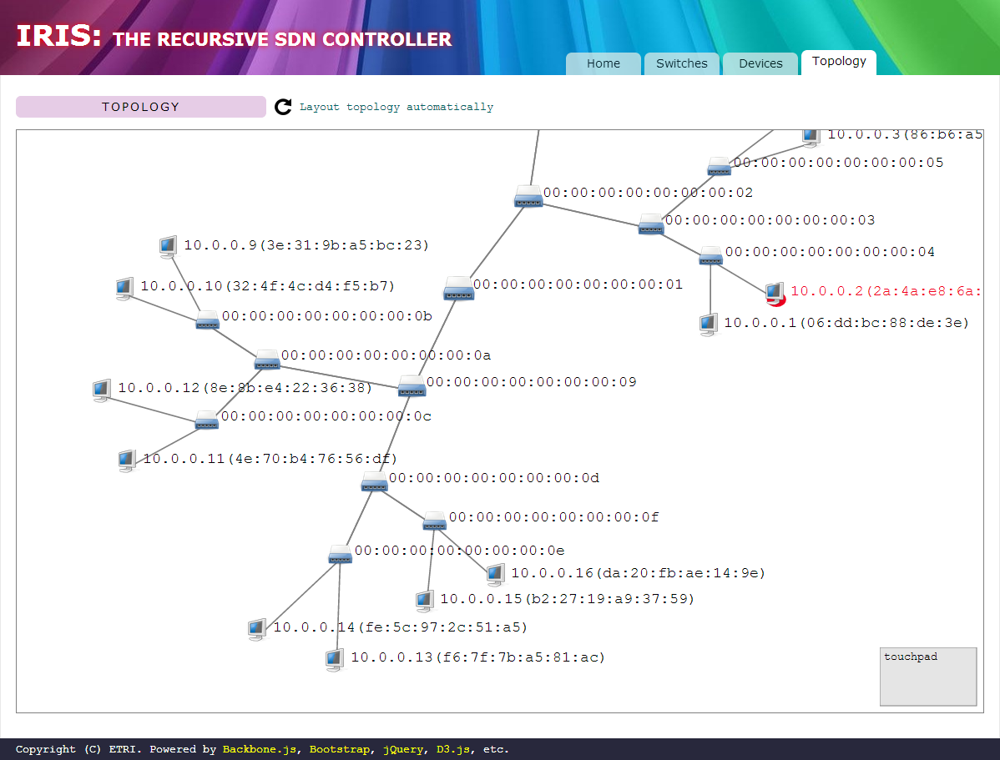

IRIS
is an Openflow Controller software created by ETRI. It is built on Beacon-like NIO-based event handling mechanism, and has many core modules ported from Floodlight including mac learning, link discovery, topology management, device management, state management, etc.
However, though much of IRIS came from Floodlight and Beacon, IRIS has much simpler architecture than that of Floodlight, which enables EASY development of modules and applications. Moreover, due to its simplicity, IRIS provides much better performance than other Java-based Openflow controllers. We also did major re-factoring on the Floodlight UI in creating IRIS UI. In result, the rendering of underlying network dynamics is more compact and beautiful.
 In creating IRIS, we did lots of re-factoring especially on following area:
- IO Event Handling
- Controller & Module Development Architecture
- REST API implementation
- NoSQL Database Integration
One thing you note is that the REST API is fully compliant with that of Floodlight. That means you can safely move your existing REST Openflow applications to IRIS.
You can find the document of this project here (https://github.com/bjlee72/IRIS/wiki).
Byungjoon Lee (bjlee@etri.re.kr)